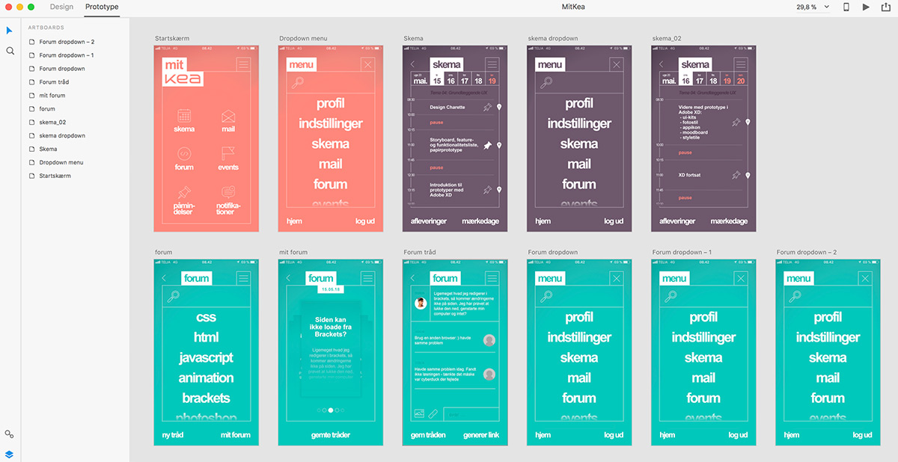

Vi har bl.a. lavet et spørgeskema omkring KEA's udfordringer. Nogle af resultaterne kan læsest her.
Mad: Platforme: Social: Undervisning:
„Vi vil have en bedre og billigere kantine“
„Der mangler en bedre platform med flere muligheder til vores skema“
„Lære de internationale bedre at kende, så vi får et udvidet netværk“
„Indeklimaet er et stort problem“
„Balancen mellem det teoretiske og praktiske er meget godt“
„Mobilbrug i undervisningen er et problem“
„Eksamen er en stor stress-faktor i dagligdagen“
„Vi har brug for en bedre løsning til Kea’s mail“
Det helt store problem er overblik over vores skema. Det er ikke mobilvenligt, kan ikke lede og skal starte på den 29. jan. hver gang man åbner dokumentet. Andre problemer er Kea's mail. De fleste tjekker den månedligt eller aldrig. Der skal også være bedre forhold til den Internationale linje. Også studiohjælpen kan optimerest.
Løsningen på disse problemer kan løsest i en app, som jeg vil kalde „MitKea“. Her vil man få et bedre overblik over forskellige ting, som Fronter ikke er godt til. Jeg vil samle alt i en app, som er mere privat og sosial i forhold til Fronter.
Se styletile og moodboard her
Se hele app-indholdet og funktioner her.
Her kan du se hvilke funktioner der er færdige i prototyoen